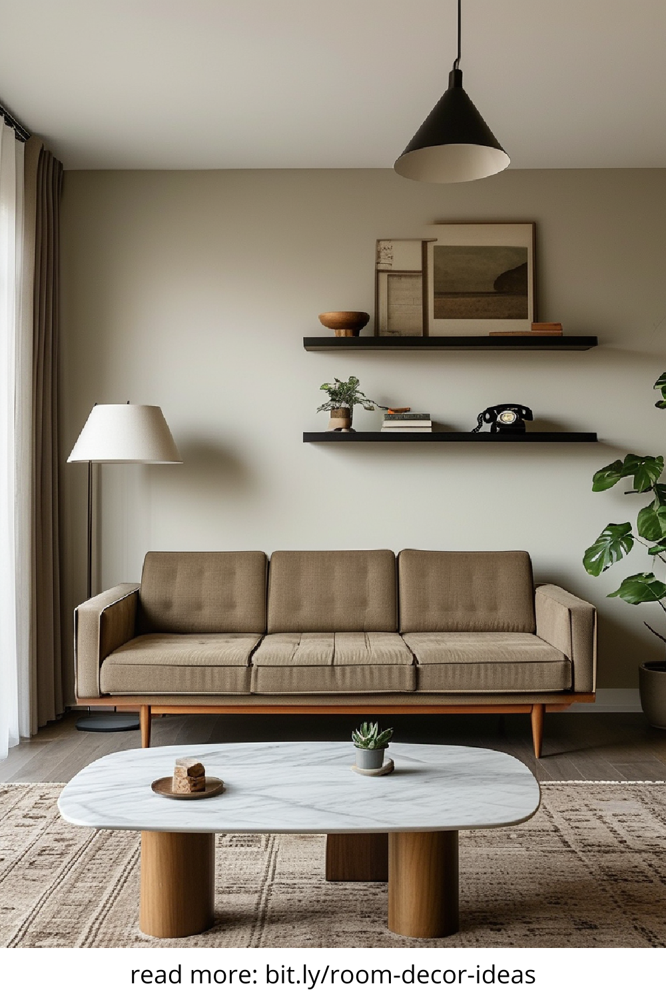

Timeless Charm: Embrace Vintage Home Decor
Vintage home decor has seen a remarkable resurgence in recent years, as homeowners seek warmth, character, and a sense of history within their living spaces. More than just a trend, vintage design represents a deep appreciation for craftsmanship, storytelling, and sustainability. Whether you’re revamping an entire home or just looking to add a nostalgic touch, incorporating vintage elements can transform any room into a timeless sanctuary. Here's everything you need to know to get started.
What Defines Vintage Home Decor?
Vintage home decor typically refers to design elements that are at least 20 to 100 years old, representing a distinct aesthetic from past decades. These pieces may include antique furniture, aged textiles, retro lighting, and collectible accessories. Unlike modern minimalism, vintage decor embraces intricate details, textures, and craftsmanship that evoke memories of bygone eras. The appeal lies in their authenticity and ability to tell a story, making each item a conversation starter within your home.
Why Vintage Style Is Making a Comeback
People are increasingly drawn to vintage home decor due to its environmental benefits, affordability, and uniqueness. Repurposing and reusing older items helps reduce waste and supports a more sustainable lifestyle. Additionally, vintage pieces are often better made than many contemporary items, boasting solid wood construction, hand-stitched fabric, or hand-painted finishes. Beyond practicality, vintage decor allows homeowners to break free from mass-produced uniformity and create spaces that reflect personal tastes and history.
Where to Source Authentic Vintage Pieces
Finding the perfect vintage home decor items can be an exciting treasure hunt. Start by exploring local thrift shops, flea markets, estate sales, and antique stores. These venues often offer one-of-a-kind finds at more affordable prices. Online marketplaces like Etsy, eBay, and Chairish also provide access to a global selection of vintage goods. To ensure authenticity, check for maker’s marks, labels, or patina that suggest age and origin. A little research can go a long way in securing timeless additions to your space.
Mixing Vintage with Modern for Balance
Blending vintage home decor with modern elements creates a dynamic and balanced look that avoids appearing outdated or overly nostalgic. For example, pair a mid-century modern coffee table with a sleek, contemporary sofa, or display antique mirrors above minimalist vanities. The contrast between old and new adds visual interest and prevents your space from feeling like a time capsule. To maintain cohesion, stick to a consistent color palette or design motif that ties the different eras together.
Top Vintage Styles to Consider
There are numerous vintage styles to suit different tastes and architecture. Popular options include:
Mid-Century Modern: Clean lines, tapered legs, and bold colors from the 1940s to 1960s.
Industrial: Aged metals, reclaimed wood, and utilitarian designs from early 20th-century factories.
French Country: Ornate furniture, soft florals, and pastel tones reminiscent of rural France.
Art Deco: Glamorous geometric patterns, brass finishes, and luxurious textures from the 1920s and ’30s.
Selecting a specific vintage style or blending a few can help guide your decor choices and unify your overall look.
Caring for and Preserving Vintage Decor
Maintaining vintage home decor requires special care to ensure its longevity and beauty. Avoid harsh cleaning chemicals that may damage delicate surfaces or finishes. Use furniture oils, gentle fabric cleaners, and soft cloths when handling older pieces. If an item is particularly fragile or valuable, consult with a restoration professional. Proper maintenance not only preserves your investment but also honors the craftsmanship and legacy of the past.
Conclusion: Vintage Decor as a Personal Statement
Vintage home decor is more than just an aesthetic—it's a lifestyle that values history, individuality, and sustainability. By carefully selecting and integrating vintage pieces into your home, you can craft an environment that feels both timeless and deeply personal. Whether you’re a seasoned collector or just beginning your vintage journey, let each item you choose reflect a story worth telling. With the right approach, your home can be a beautiful blend of the past and present.
